SwitchyOmega 是一个我用了好几年的代理管理浏览器扩展，平时使用它来管理各个代理的使用，可以方便的切换代理或者设定什么网址走代理，什么网址不走代理。
之所以写 SwitchyOmega 扩展的使用教程，一方面是这个扩展是真的好用，另一方面是我的其他文章里有一些零碎的 SwitchyOmega 使用教程（各代理软件使用方法里可能提及），但是不够详细。所以我就打算完整写个 SwitchyOmega 使用教程，俗话说得好：授人以鱼不如授人以渔，我如果教会你们使用 SwitchyOmega 了，那么以后我写什么代理软件 Windows 教程时，你们也不用问我怎么配置 SwitchyOmega 了，自己就会搞定。
目前 SwitchyOmega 只支持 Google Chrome 或基于 Chromium 的浏览器 以及 Mozilla Firefox 或基于 Mozilla 的浏览器 ，当然国产浏览器说的什么自主研究极速内核大多都是使用的 Chromium 内核，所以也能安装使用。
具体 SwitchyOmega 扩展的特点，我也不好说，直接看下面的使用教程吧，看完就懂个大概了。
SwitchyOmega 非官方网站：https://www.switchyomega.com
SwitchyOmega Github 开源地址：https://github.com/FelisCatus/SwitchyOmega
注意：观看以下教程前，请确保你的浏览器支持安装该扩展！
SwitchyOmega 安装步骤
因为我平时不用 Firefox 火狐浏览器，所以安装步骤以 Chrome 浏览器为例（使用方法是通用的，只是安装方法有区别）。
点击展开 查看更多
SwitchyOmega 使用方法
第一次进入 SwitchyOmega 的扩展管理页面后，会提示你一些使用方法，有兴趣的可以跟着看一遍，没兴趣就直接选择 跳过教程 。
懒得学？没关系，我早就考虑到了，我做了一个 备份文件 放在了文章结尾，直接导入就能用了。
删除情景模式示例
一开始扩展会包含两个示例情景模式，他们没什么卵用，仅仅是为了配合扩展一开头的教程说明，所以我们直接删掉他们即可。
点击展开 查看更多
我们首先要删除 auto switch 这个自动切换的情景模式，请按照下图演示去删除，然后再删除 proxy 这个代理服务器的情景模式即可。
注意：因为 auto switch 情景模式中用到了 proxy 情景模式，所以删除顺序必须是：auto switch -> proxy
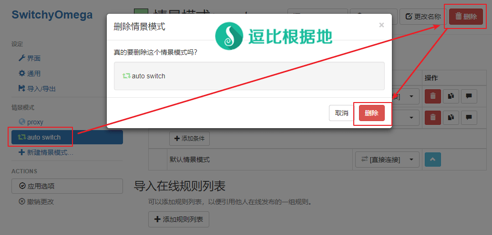
新建 代理服务器 情景模式
现在我就开始演示 新建 代理服务器 情景模式 。
点击展开 查看更多
注意：为了方便理解，以下教程以 Brook 为例（其他代理软件只需要修改代理协议和代理端口即可）。
点击扩展管理页面左侧的 新建情景模式... ，然后就会弹出窗口让你填写情景模式内容。
如下图所示，情景模式名称：Brook 全局 （名称随意），情景模式类型：代理服务器 ，然后点击 创建 按钮。
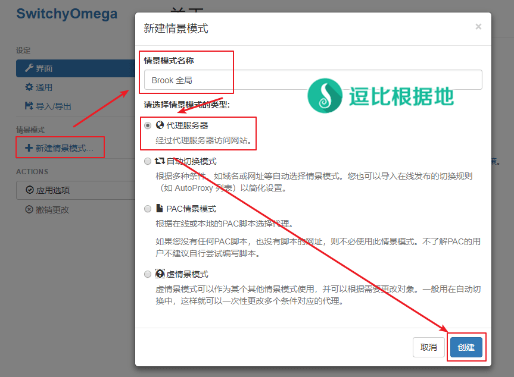
然后我们根据 Brook 的协议 与 本地监听端口来设置：
代理协议：SOCKS5 （Brook Tools 默认是 以HTTP方式启动，如果你没有改，那么这里要选择 HTTP）
代理服务器：127.0.0.1 （凡是电脑本地运行的代理软件，这里都是写 127.0.0.1）
代理端口：2080 （以我的 Brook Tools 为例，如果是 Brook 官方原版客户端，那么请写 1080）
填写完毕后（请确保没有写错），点击左下角的 应用选项 按钮保存。
这时候其实我们就可以直接使用了，但是这样的话相当于是全局代理，所有网站（除了下面的不代理的地址列表）都会走代理，如果想要让 Brook 使用 GFWList 来分流，那么请继续往下看。
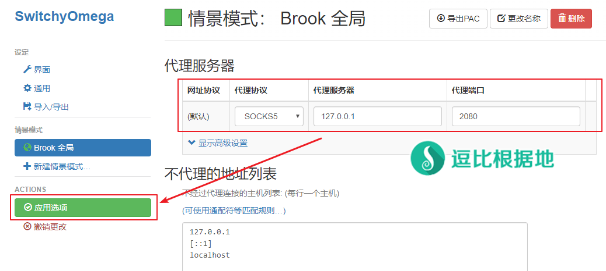
新建 自动切换模式 情景模式
要使 Brook 通过 GFWList 方式分流，那么需要再新建一个 自动切换模式 情景模式。
点击展开 查看更多
点击扩展管理页面左侧的 新建情景模式... ，然后就会弹出窗口让你填写情景模式内容。
如下图所示，情景模式名称：Brook （名称随意），情景模式类型：自动切换模式 ，然后点击 创建 按钮。
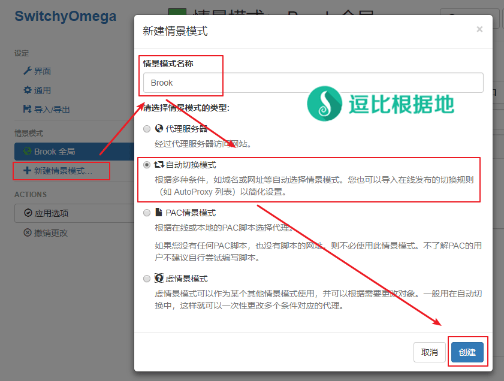
然后我们点击一下 添加条件 按钮和 添加规则列表 按钮。
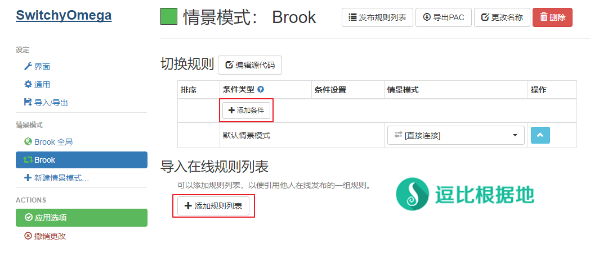
== 点击 添加条件 按钮后，就会出现一个条件规则：
条件类型：域名通配符（默认不用管）
条件设置：*.doub.io （以本站为例，*.doub.io 指的是无论是 doub.io 还是 www.doub.io abc.doub.io 都会走代理）
情景模式：Brook 全局 （这里选择 Brook 全局，意味着满足条件设置的域名都会走 Brook 全局 情景模式中配置的代理服务器）
剩下的三个按钮依次是：删除、复制、备注。
== 点击 添加规则列表 按钮后，就会出现一些规则列表设置：
规则列表格式：AutoProxy
规则列表网址：https://raw.githubusercontent.com/gfwlist/gfwlist/master/gfwlist.txt （这就是 GFWList）
然后我们点击 立即更新情景模式 按钮。
最后我们还需要设置一下 规则列表规则的情景模式和默认情景模式。
规则列表规则：Brook 全局（这代表当你访问的域名经过 GFWList 匹配后，判断为走代理，那么就会走 Brook 全局 情景模式中的代理服务器）
默认情景模式：[直接连接]（这代表当你访问的域名经过 GFWList 匹配后，判断为不走代理，那么就会直接连接网站）
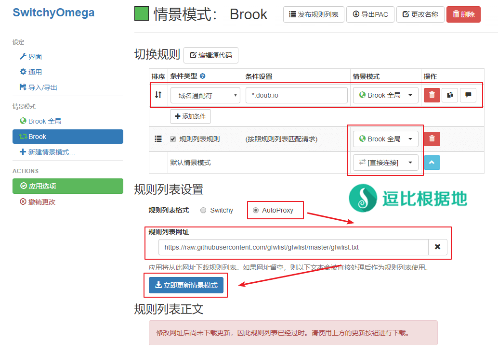
新建 PAC情景模式 情景模式（可选）
考虑到一些人依然会使用 PAC方式 翻墙，所以我也没有跳过 新建 PAC情景模式 情景模式 设置方法。
点击展开 查看更多
点击扩展管理页面左侧的 新建情景模式... ，然后就会弹出窗口让你填写情景模式内容。
如下图所示，情景模式名称：PAC （名称随意），情景模式类型：PAC情景模式 ，然后点击 创建 按钮。
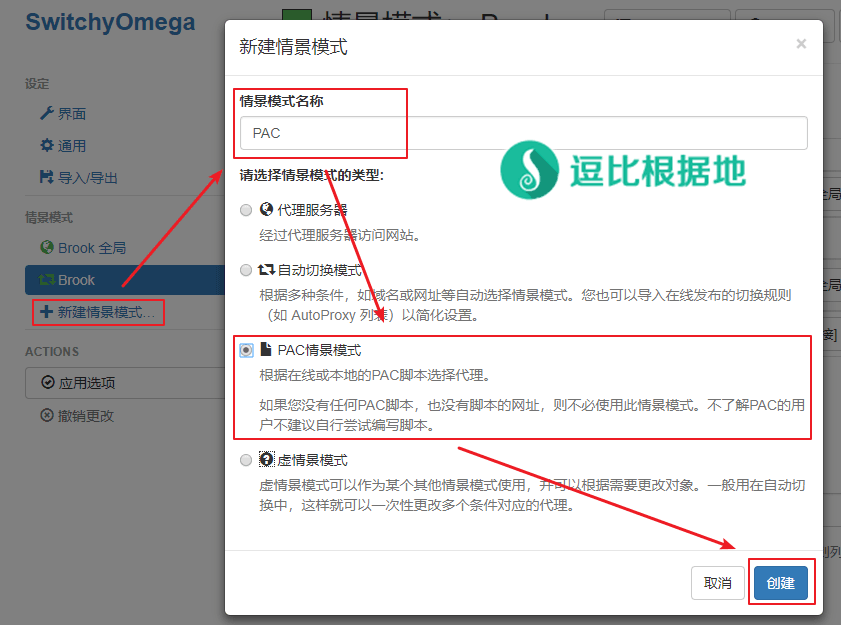
PAC情景模式的设置就更简单了，直接把你的 PAC 在线网址 填写进去并点击 立即更新情景模式 按钮即可。
下图是我随便找了个 PAC 在线网址，看了下似乎作者已经不维护，失效了，不要照着填。
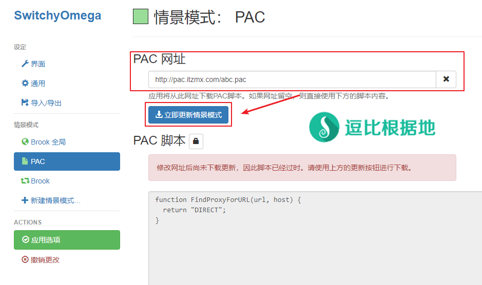
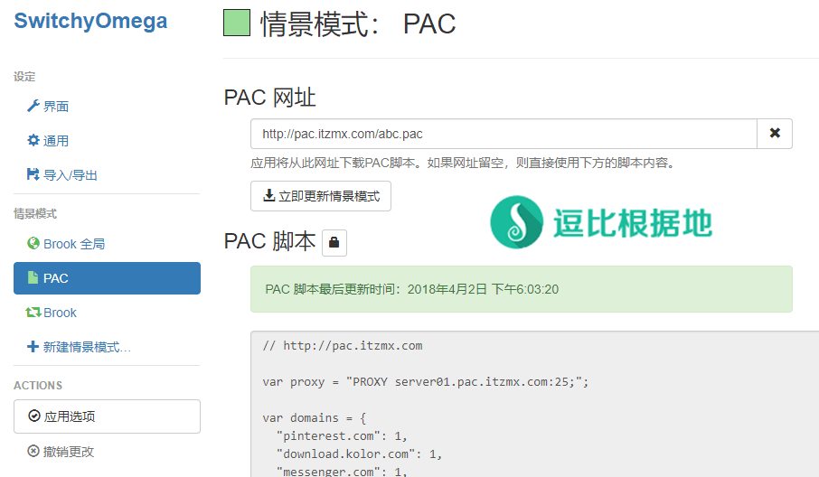
新建 虚情景模式 情景模式
一开始我并不理解这个 虚情景模式 到底是干什么的，后来再在评论里的一些人科普+去网上查了查，理解了，的确这个功能很棒，对于经常需要多个代理切换的人来说是必不可少的（至少我在理解后，就完全删除了 Brook (自动切换情景模式) 这些）。
点击展开 查看更多
先简单介绍一下 虚情景模式：
虚情景模式并不能单独使用，他需要配合一个 自动切换情景模式（假设名称为自动切换） ，自动切换情景模式里面的规则条件情景模式指向 -> 虚情景模式 。这时候当你使用 自动切换 (自动切换情景模式) 情景模式时，会根据访问的网站和条件匹配结果（例如访问谷歌判断为走代理），那么 自动切换 (自动切换情景模式) 情景模式就会交给 虚情景模式 处理，而 虚情景模式 里面可以设置使用什么情景模式（例如我们设置为 Brook 全局(代理服务器) 情景模式），那么最终访问谷歌网站就会走 Brook 全局(代理服务器) 情景模式。
简单的来说就是，如果你只用 自动切换情景模式 ，那么如果有多个代理时，你需要维护多个 自动切换情景模式 里面的规则（Brook 添加了一个域名规则，Goflyway、SS/SSR 自动切换情景模式 也需要自己添加一个域名规则），而如果用 虚情景模式，那么就可以避免这种事情，只需要创建一堆 XXX 全局(代理服务器) 情景模式，然后再创建一个 自动切换情景模式 和 虚情景模式 即可。
下面就开始介绍 虚情景模式 的详细使用步骤了。
点击扩展管理页面左侧的 新建情景模式... ，然后就会弹出窗口让你填写情景模式内容。
如下图所示，情景模式名称：自动切换 （名称随意），情景模式类型：自动切换模式 ，然后点击 创建 按钮。
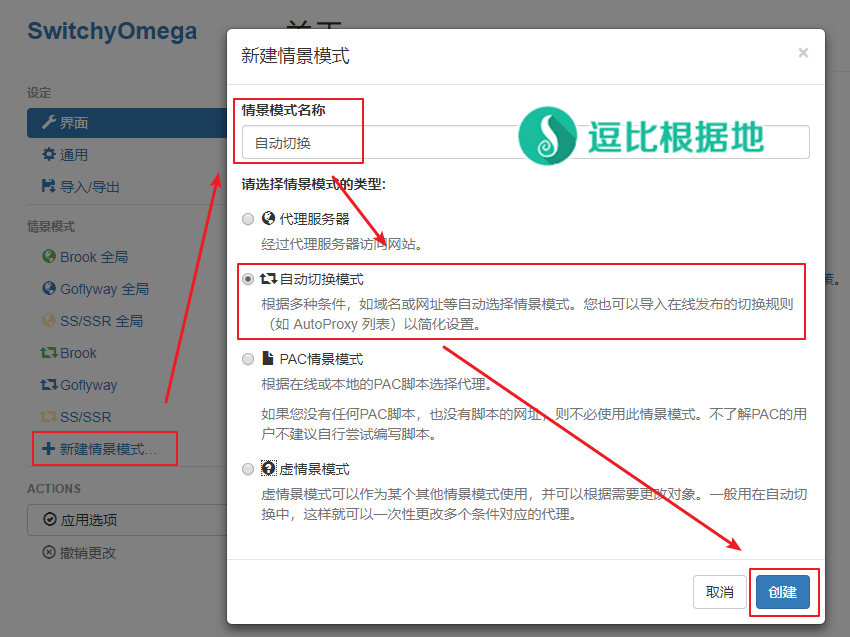
然后 自动切换(自动切换情景模式) 情景模式里面的配置与 Brook (自动切换情景模式) 情景模式一样即可（#新建 自动切换模式 情景模式）。
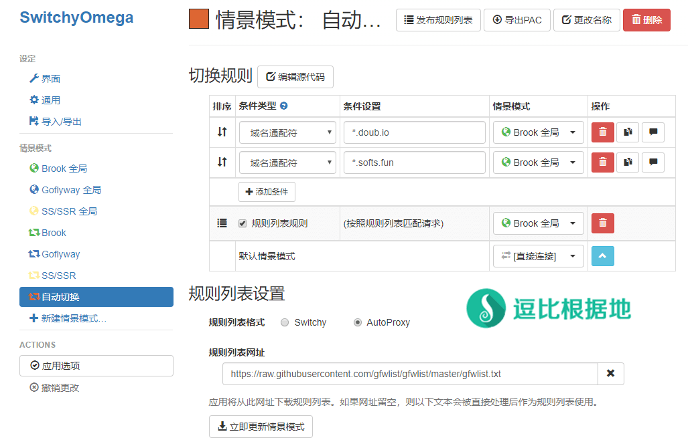
然后我们再点击扩展管理页面左侧的 新建情景模式... ，然后就会弹出窗口让你填写情景模式内容。
如下图所示，情景模式名称：虚情景模式 （名称随意），情景模式类型：虚情景模式 ，然后点击 创建 按钮。
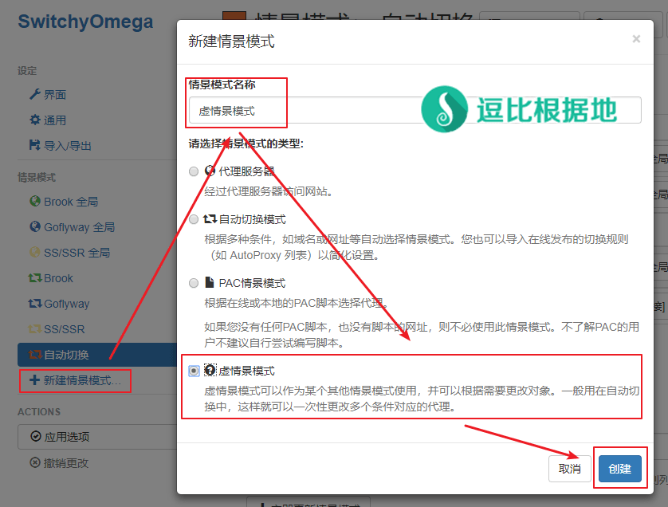
然后我们发现就两个选项，首先我们设置 虚情景模式 - 目标，例如我现在主要用 Brook 代理，所以我就选择 Brook 全局(代理服务器) 情景模式。
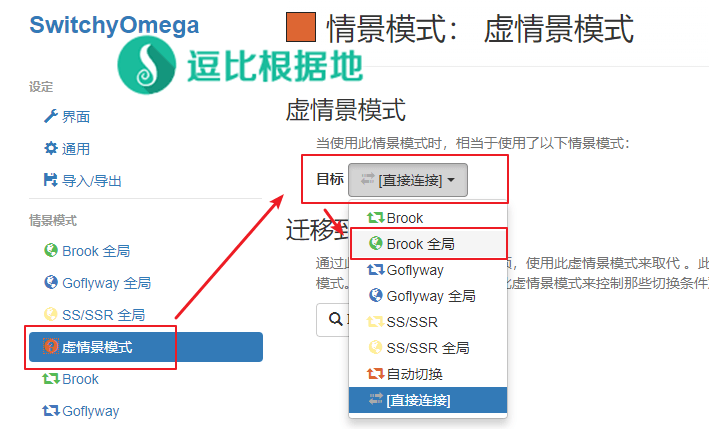
然后我们再点击另外一个按钮，迁移到虚情景模式 - 取代目标情景模式。
接着就弹出了一个 替换情景模式 的窗口，这个功能的意思就是把目前 SwitchyOmega 扩展 内的所有 自动切换情景模式 中的条件结果 Brook 全局(代理服务器) 替换为当前这个 虚情景模式(虚情景模式)，选择 Brook 全局(代理服务器)，然后点击 替换 按钮。
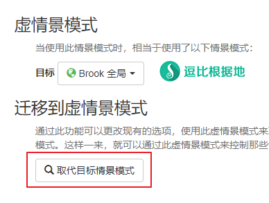
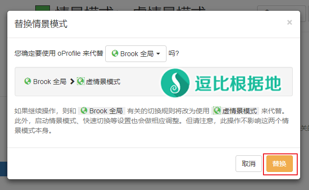
点击 替换 按钮后，我们再去 上面刚刚新建的 自动切换(自动切换情景模式) 情景模式看看，会发现原来我们设置为 Brook 全局(代理服务器) 情景模式都被替换为 虚情景模式(虚情景模式) 情景模式了(包括上面的 Brook(自动切换情景模式) 情景模式)。
当然你也可以不这么做，改为手动的去 自动切换(自动切换情景模式) 情景模式中把 Brook 全局(代理服务器) 情景模式修改为 虚情景模式(虚情景模式) 情景模式，这样就避免了 Brook(自动切换情景模式) 情景模式中的 Brook 全局(代理服务器) 情景模式也被直接替换为 虚情景模式(虚情景模式) 情景模式的问题。
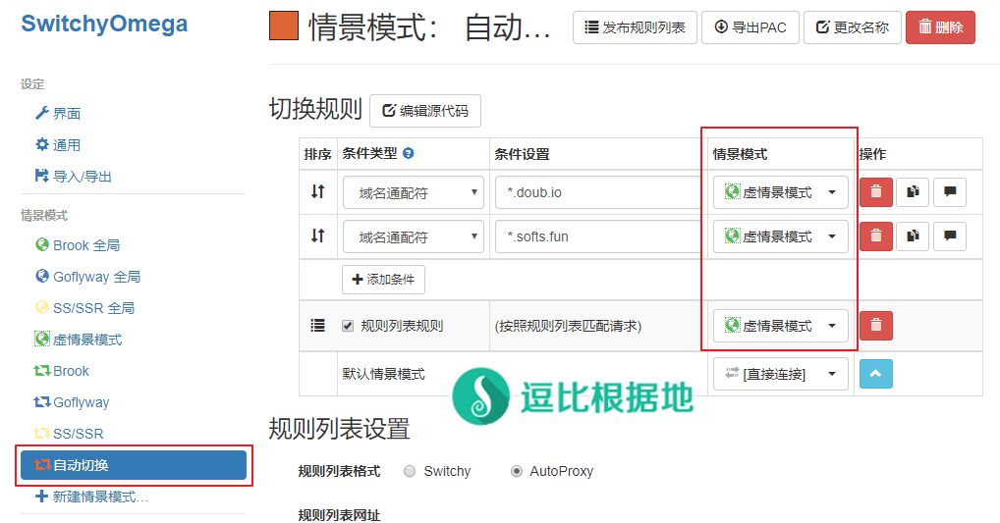
这时候我们就需要试验下效果了。
我们点击浏览器右上角的 SwitchyOmega 扩展按钮，选择 自动切换(自动切换情景模式) 情景模式，然后访问谷歌搜索首页 https://www.google.com/ncr。
可以看到 SwitchyOmega 扩展按钮的颜色为 外圈绿色内圈红色 ，外圈绿色代表当前使用的是 Brook 全局(代理服务器) 情景模式，而内圈红色代表当前选择的是 自动切换(自动切换情景模式) 情景模式。
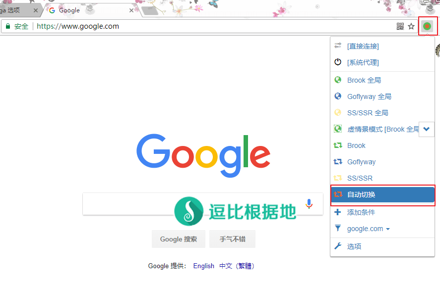
如果我们想换成其他代理了，比如 Goflyway ，那么可以点击 虚情景模式 右边的 按钮 ，然后就会看到你当前能选择的情景模式，我们选择 Goflyway 全局(代理服务器) 情景模式。
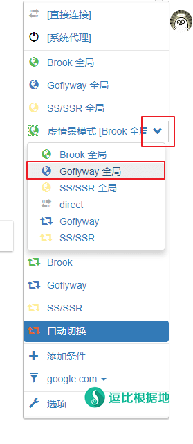
然后我们再去访问谷歌首页，就会发现 SwitchyOmega 扩展按钮的颜色为 外圈蓝色内圈红色 ，外圈蓝色代表当前使用的是 Goflyway 全局(代理服务器) 情景模式，而内圈红色代表当前选择的是 自动切换(自动切换情景模式) 情景模式。
这样以后，我们要什么网站走代理或者不走代理，就可以只维护 自动切换(自动切换情景模式) 情景模式中的各种条件规则了，方便很多。
没理解？自己多手动操作几次就懂了，我就是，啦啦啦。
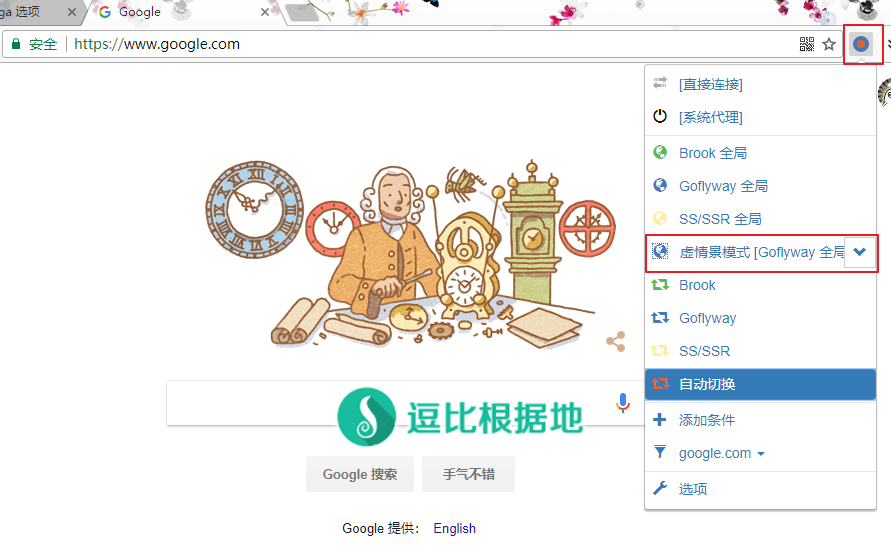
测试扩展的代理管理效果
在配置完代理规则后，我们访问网页一下试试。
点击展开 查看更多
我们点击浏览器右上角的 SwitchyOmega 扩展按钮，选择 Brook 全局 (代理服务器) 或者 Brook (自动切换情景模式) 情景模式，然后访问谷歌搜索首页 https://www.google.com/ncr。
- 当选择 Brook 全局 (代理服务器) 的时候，访问谷歌网站，直接就判断为走代理了，于是经过 Brook 全局 情景模式中的代理服务器访问谷歌网站了。
- 当选择 Brook (自动切换情景模式) 的时候，访问谷歌网站，扩展会去 GFWList 中匹配规则，因为谷歌网站被墙了，GFWList里面有谷歌域名，所以判断结果为走代理，于是就经过 Brook 全局 情景模式中的代理服务器访问谷歌网站了。
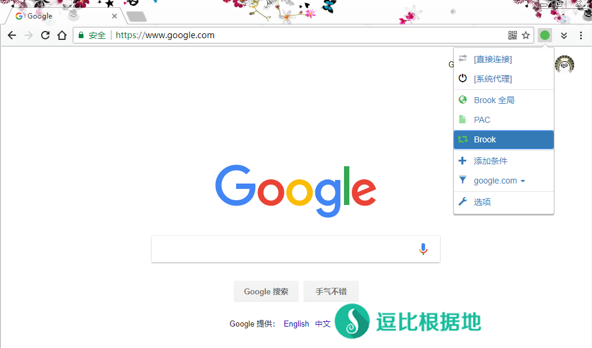
访问百度 ，心细的人会发现 浏览器右上角的 SwitchyOmega 扩展按钮 颜色变了，访问谷歌网站则是全部绿色（绿色是因为这些情景模式正好都是默认绿色图标，颜色是随机的），而访问 百度 则是 内圈绿色外圈灰色 ，这是因为 百度的域名没有被墙（或者说没有加入到 GFWList 列表中），所以扩展判断结果为不走代理，SwitchyOmega 扩展按钮 的图标外圈颜色就对应了判断结果（走了哪个情景模式）。
假如又新建了一个 Goflyway 全局 (代理服务器) 情景模式，并且图标颜色为蓝色，当配置 Brook (自动切换情景模式) 情景模式的谷歌域名判断条件为走 Goflyway 全局 情景模式，那么访问谷歌网站就会是 外圈蓝色内圈绿色。
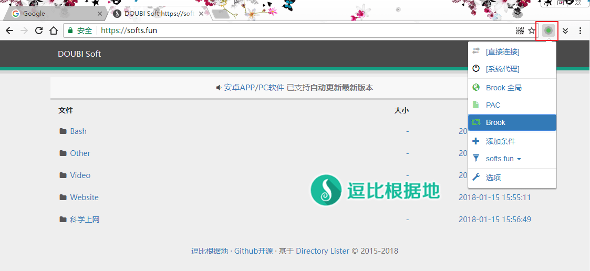
临时让某个网站走代理
如果你访问某个网站，需要让其走代理，或者因为某个网站被墙，而 GFWList 里没有这个网站域名，但是又仅仅是临时访问，那么可以配置让这个网站临时走代理（重启浏览器后失效）。
点击展开 查看更多
以逗比云网站为例，点击浏览器右上角的 SwitchyOmega 扩展按钮，然后点击 逗比云的域名：softs.fun 然后在选择 Brook 全局 (代理服务器) 情景模式。
这样访问 逗比云就会默认走代理了（注意下面第二张图的 SwitchyOmega 扩展按钮颜色），在关闭当前浏览器窗口前，都是有效的。

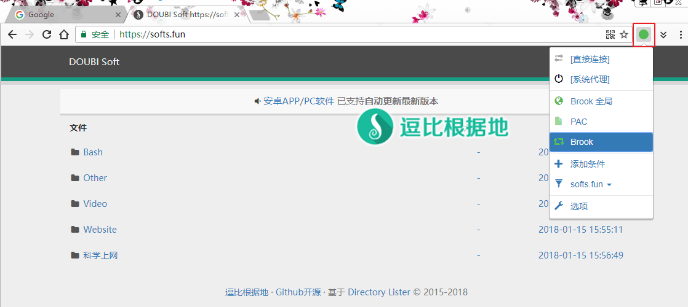
永久让某个网站走代理
如果你访问某个网站，需要让其走代理，或者因为某个网站被墙，而 GFWList 里没有这个网站域名，那么可以配置让这个网站永久走代理（重启浏览器后也有效）。
点击展开 查看更多
以逗比云网站为例，点击浏览器右上角的 SwitchyOmega 扩展按钮，然后点击 添加条件 。
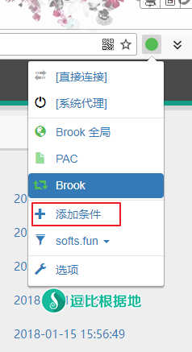
就会看到如下图所示的添加条件窗口，我们只需要修改下 情景模式 为 Brook 全局 (代理服务器) 即可，然后点击 添加条件 按钮。
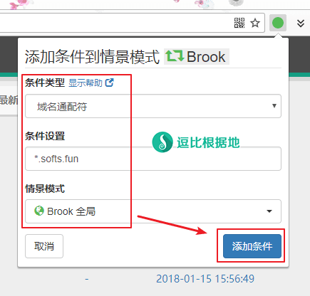
然后我们在访问 逗比云 网站时，就会发现走代理了，并且当我们进入 SwitchyOmega 扩展的 Brook 情景模式内，就会看到如下图所示，逗比云的 *.softs.fun 已经直接添加进去了。
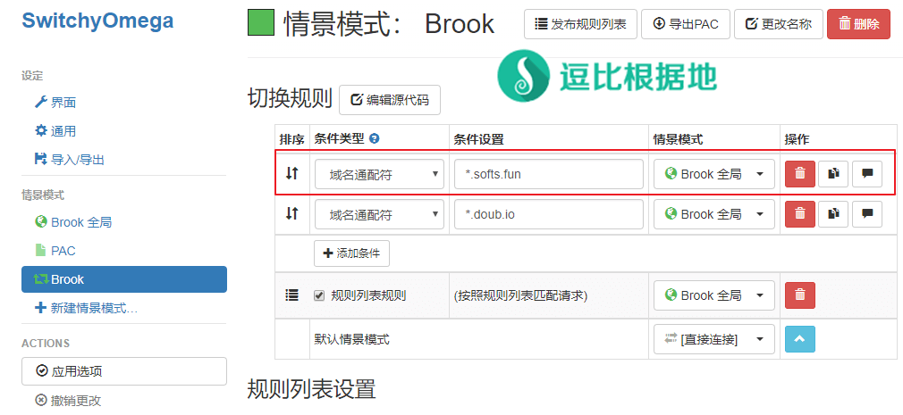
修改 初始情景模式
上面的步骤折腾完不代表彻底搞完了，你还需要修改一下 初始情景模式，也就是新打开浏览器的时候默认的情景模式。
点击展开 查看更多
进入 SwitchyOmega 扩展管理页面后，点击左上角的 界面 选项，即可看到如下图所示的 初始情景模式，我们把它改成 Brook (自动切换情景模式) 情景模式，这样下次打开浏览器默认就是 Brook (自动切换情景模式) 情景模式了。
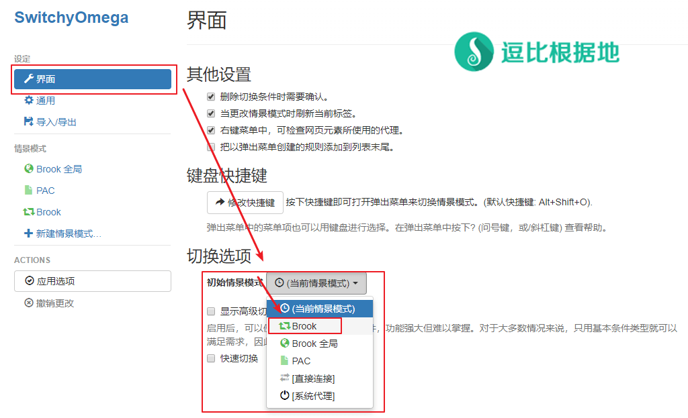
配置文件 导入/导出 说明
既然有这么多的玩法，那么备份功能肯定是少不了的。
点击展开 查看更多
在 SwitchyOmega 扩展管理页面，点击左上角的 导入/导出 选项，即可看到 生成备份文件 和 从备份文件恢复 的按钮。
我做了一个 SwitchyOmega 扩展备份文件上传到了逗比云，里面包含了：
- Brook 全局(代理服务器)、Brook(自动切换情景模式)
- Goflyway 全局(代理服务器)、Goflyway(自动切换情景模式)
- SS/SSR 全局(代理服务器)、SS/SSR(自动切换情景模式)
- 自动切换(自动切换情景模式)、虚情景模式(虚情景模式)
注意：Brook Tools 默认是 HTTP协议（以HTTP方式启动），而我的配置备份文件是 SOCKS5协议，请视情况修改。
备份文件链接：https://softsmirror.cf/Other/OmegaOptions.bak
懒得小伙伴可以直接下载并导入到 SwitchyOmega 扩展中，就可以直接使用了（里面包含的都是默认本地端口，如果不一样请注意修改，三个 XXX 全局的代理端口分别是：2080、8100、1080）。
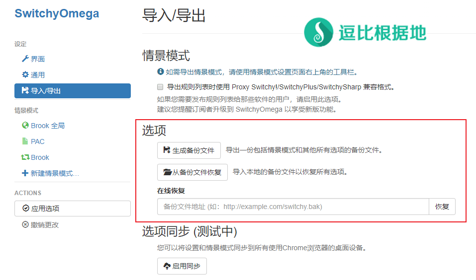
有什么错误的地方请告诉我，有什么需要补充的也请告诉我。
预计下一个文章，就是如何检查系统代理设置是否正常的文章，主要也是很多代理软件自带设置系统代理设置，但是因为各种问题导致无法使用，但是我以往写过的检查系统代理设置功能太过简单碎片，所以我会整理一下这些基础的文章教程。
转载请超链接注明：逗比根据地 » 一个轻松快捷管理和切换多个代理的浏览器扩展 SwitchyOmega 使用教程
责任声明：本站一切资源仅用作交流学习，请勿用作商业或违法行为！如造成任何后果，本站概不负责！


不过 Steam 内置浏览器 默认会 读取系统代理设置。
另外，chrome浏览器内核叫做 Chromium 内核。
并且 Brook Tools 代理模式选择 直连模式，这样就不会修改系统代理设置，也不会影响其他软件了。
而那些想要走代理的软件，例如 Telegram 都是支持设置代理的，设置 SOCKS5 127.0.0.1 2080 就行了。
一开始我也和你一个想法，但是当我用习惯这个扩展后，就离不开了。它比单纯的PAC模式来说灵活多了。
反正对我来说，这个扩展是必需品，不用不舒服，什么代理都需要通过他来管理，可以很方便的切换代理或者让一些网站走代理 不走代理 分别走什么代理。
请记住，他只是个【代理管理扩展】，而不是个【代理扩展】。